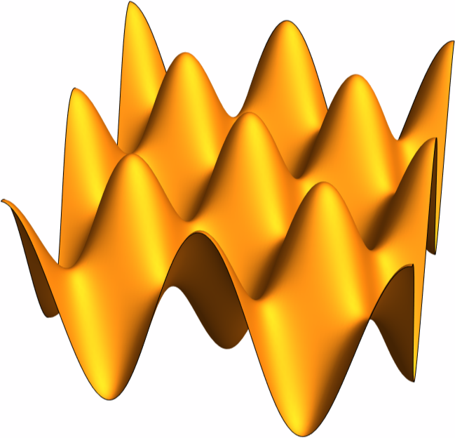
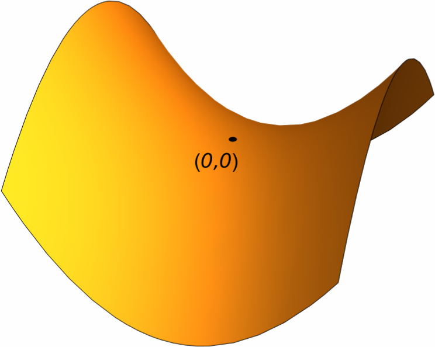
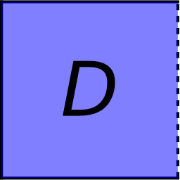
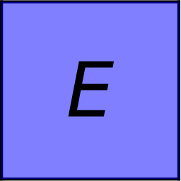
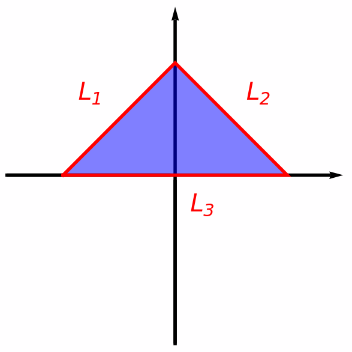
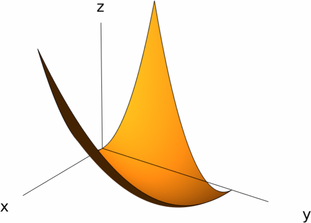

Optimization
The purpose of this section is to showcase how we can use partial derivatives in order to compute the (local) maximum and minimum values of a function of two variables. More precisely, we will see how Fermat's theorem and the Second Derivative Test for functions of a single variable can be translated to the case of functions of several variables.
Local Maximum and Minimum Values
- a local maximum at $(a,b)$ if for any $(x,y)$ sufficiently close to $(a,b)$ we have $f(a,b)\geq f(x,y)$.
- a local minimum at $(a,b)$ if for any $(x,y)$ sufficiently close to $(a,b)$ we have $f(a,b)\leq f(x,y)$.

Recall that if $f(x)$ is a function of a single variable which has a local maximum or minimum at $x=a$, then $f'(x)=0$. This result is known as Fermat's Theorem. For functions of several variables, the situation is very similar:
Proof.
For instance, let us show that $f_x(a,b)=0$. The case of $f_y(a,b)$ is very similar.
Consider the function $g(t)=f(t,b)$. By considering the function $g$, we are looking at the values of the function $f$ along the horizontal line $y=b$. Since $f$ has a local maximum at $(a,b)$, we see that $g$ has a local maximum at $a$. Hence, by Fermat's theorem: \[ g'(a)=f_x(a,b)=0. \]
Following the terminology for functions of a single variable, we can also establish the notion of critical points.
- at least one of the partial derivatives $f_x(a,b)$ of $f_y(a,b)$ does not exist, or
- both partial derivatives $f_x(a,b)$ and $f_y(a,b)$ exist and are zero (that is, $\nabla f(p)=0$).
Consequently, the above theorem can be reinterpreted as saying that if $f(x,y)$ has a local maximum (or minimum) at $(a,b)$, then $(a,b)$ is a critical point of $f$.
Consider the function \[ f(x,y)=x^2-y^2. \] Since the gradient of $f$ is $\nabla f(x,y)=\langle 2x,2y\rangle$, the only critical point of $f$ is $(0,0)$. However, $f$ does not have a maximum or minimum value at $(0,0)$, because for any small value of $t$ we have \[ -t^2 = f(0,t) < f(0,0) = 0 < f(t,0) = t^2. \]

Motivated by this example, we establish the following definition:
How can we check if a function $f(x,y)$ achieves a local extreme value at a point $(a,b)$? As always, we look for inspiration in the case of functions of one variable.
Let $f(x)$ be a function of one variable and $x=a$ a critical point of $f$. The Second Derivative Test allows us to discuss whether $f$ achieves a local maximum or minimum value at $x=a$ by looking at the sign of $f''(a)$:
- If $f''(a)>0$, then $f$ has a local minimum at $x=a$.
- If $f''(a)<0$, then $f$ has a local maximum at $x=a$.
- If $f''(a)=0$, then the test is inconclusive: $f$ can have a local maximum, a local minimum, or neither at $x=a$.
Now, suppose that $f(x,y)$ is a function of two variables and $(a,b)$ is a critical point of $f$. In this case, $f$ will have four partial derivatives of second order at $(a,b)$, which are $f_{xx}(a,b)$, $f_{xy}(a,b)=f_{yx}(a,b)$ (this equality is due to Clairaut's theorem) and $f_{yy}(a,b)$. Thus, the condition $f''(a)>0$ will transform into a condition that involves the second order partial derivatives of $f$:
- If $f_{xx}(a,b)>0$ and $D>0$, then $f$ has a local minimum at $(a,b)$.
- If $f_{xx}(a,b)<0$ and $D>0$, then $f$ has a local maximum at $(a,b)$.
- If $D<0$, then $f$ has a saddle point at $(a,b)$.
- If $D=0$, then the test is inconclusive: $f$ can have a local maximum, a local minimum, or a saddle point at $(a,b)$.
Solution.
We first look for the critical points of the function $f$. The gradient of $f$ is \[ \nabla f = \langle 4x+2xy,2y+x^2 \rangle. \] Thus, the critical points of $f$ are the points $(x,y)$ that satisfy the system of equations \[ \left\{ \begin{array}{rcl} 4x+2xy & = & 0, \\ 2y+x^2 & = & 0, \end{array} \right. \] From the equation $4x+2xy=2x(2+y)=0$ we obtain that either $x=0$ or $y=-2$.
If $x=0$, then the second equation becomes $2y=0$, so $y=0$ and we obtain that $(0,0)$ is a critical point of $f$.
If $y=-2$, then the second equation says $-4+x^2=0$, so that $x=\pm 2$. This gives us two critical points: $(0,0)$, $(2,-2)$ and $(-2,-2)$.
Now that we know the critical points of $f$, we have to look at the partial derivatives of order two. We have \[ f_{xx}(x,y)=4+2y, \qquad f_{xy}(x,y)=2x, \qquad f_{yy}(x,y)=2, \] Hence, we obtain \[ D = 2(4+2y)-4x^2 = 8+4y-4x^2. \]
We now examine each of the critical points that we found for $f$:
- At $(0,0)$, we have $f_{xx}(0,0)=4>0$ and $D(0,0)=8>0$, so $f$ has a local minimum value at $(0,0)$, and this value is $f(0,0)=0$.
- At $(2,-2)$, we see that $D(2,-2)=-16<0$, so $(2,-2)$ is a saddle point of $f$.
- At $(-2,-2)$, we have $D(-2,-2)=-16<0$, so $(-2,-2)$ is also a saddle point of $f$.
Since we already covered all critical points, we also deduce that $f$ does not achieve a local maximum.
Solution.
The dimensions of a parallelepiped are its length $l$, its width $w$ and its height $h$. For the sake of convenience, we will measure these dimensions in inches.
Since the volume of a parallelepiped is $V=lwh$, we see that \[ lwh=27. \] This equation allows us to solve for one of the variables in terms of the other two, for instance, we can solve for the length to obtain \[ l=\frac{27}{wh}. \] In addition, the surface area of the parallelepiped is equal to \[ 2lw+2wh+2lh=\frac{54}{h}+2wh+\frac{54}{w}. \] Therefore, in order to find the dimensions of the parallelepiped that encloses the minimum possible surface area, we have to minimize the function \[ g(h,w)=\frac{54}{h}+2wh+\frac{54}{w}. \] The gradient of $g$ is \[ \nabla g(h,w) = \bigg\langle -\frac{54}{h^2}+2w, 2h-\frac{54}{w^2} \bigg\rangle, \] so finding the critical points of $g$ amounts to solving the system \[ \left\{ \begin{array}{ccc} 2w-\frac{54}{h^2}&=&0,\\ 2h-\frac{54}{w^2}&=&0, \end{array} \right. \] This system has a unique solution, which is $h=3$ and $w=3$, so the only critical point of $g$ is $(3,3)$.
We now apply the Second derivative test: The second partial derivatives of $g$ are \[ g_{hh}=\frac{108}{h^3},\quad g_{hw}=g_{wh}=2,\quad g_{ww}=\frac{108}{w^3}. \] Therefore, at $(3,3)$ we get \[ g_{hh}(3,3)=4,\quad g_{hw}(3,3)=g_{wh}=2,\quad g_{ww}(3,3)=4, \] so $g_{hh}(3,3)>0$ and $D(3,3)=4^2-2^2=12>0$. This shows that $g$ achieves a local minimum at $(3,3)$.
In conclusion, the only parallelepiped that encloses a volume of $27\,\text{in}^3$ while having the least possible surface area is the one whose height and width are $3\,\text{in}$, and whose length is \[ l=\frac{27}{3\cdot 3}=3\,\text{in}. \]
Absolute Maximum and Minimum Values
Here we extend both the Extreme Value Theorem and the Closed Interval Method to functions of two variables. First we need to establish that it means for a function to have an absolute extreme value.
- We say that $f(a,b)$ is the absolute maximum value of $f$ on $D$ if $f(a,b)\geq f(x,y)$ for any point $(x,y)$ in $D$.
- We say that $f(a,b)$ is the absolute minimum value of $f$ on $D$ if $f(a,b)\leq f(x,y)$ for any point $(x,y)$ in $D$.
The Extreme Value Theorem asserts that any continuous function $f\colon [a,b]\to \RR$ defined on a closed interval has a maximum and a minimum values. In addition, the Closed Interval Method allows us to find those values as follows:
- Compute the critical points of $f$ in $(a,b)$ and the values of $f$ at said critical points.
- Calculate the numbers $f(a)$ and $f(b)$.
-
The absolute maximum value of $f$ is the maximum of
all the numbers obtained in the previous two steps.
Similarly, the absolute minimum value of $f$ is the minimum of all the numbers obtained in the previous two steps.
The Extreme Value Theorem will also be true for functions of two variables. However, in order to understand how this result works in this context, we first need to understand which subsets of $\RR^2$ will play the role of closed intervals.
Let $D$ be a subset of $\RR^2$. A point $(a,b)$ is called a boundary point of $D$ if any disk centered around $D$ contains points inside $D$ and points outside $D$. Intuitively, we can think of the boundary points of $D$ as those in the border of $D$.
- Closed if it contains all its boundary points.
- Bounded if it is contained in a disk.


We can now formulate the Extreme Value Theorem for functions of two variables.
Because of Fermat's theorem, if $f$ achieves an absolute extreme value at the point $(a,b)$, then either $(a,b)$ is a critical point of $f$ or it is in the boundary of $D$. Consequently, we can give the following extension of the Closed Interval Method for functions of two variables:
Consider a function $f(x,y)$ that is continuous on the closed bounded set $D$. Then in order to find the absolute extreme values of $f$, we can follow the steps below:
- Compute the critical points of $f$ inside $D$ and the values of $f$ at said critical points.
- Find the extreme values of $f$ along the boundary of $D$.
- The absolute maximum value of $f$ is the largest number obtained in the two previous steps. Similarly, the absolute minimum value of $f$ is the smallest number obtained in the two previous steps.

Solution.
We follow the steps detailed above.
First, we find the critical points of $f$ in $D$. In order to do this, we compute the gradient of $f$: \[ \nabla f(x,y)=\langle 2x,2y-2\rangle. \] By solving the equation $\nabla f(x,y)=0$, we see that the only critical point of $f$ is $(0,1)$, which is contained in $D$. The value of $f$ at $(0,1)$ is $f(0,1)=-1$.
Now we have to study the values of $f$ along the boundary of $D$. Notice that this boundary is comprised of three lines, which are labelled by $L_1$, $L_2$ and $L_3$ in the picture. We will find the maximum and minimum values of $f$ along each of these lines separately.
Firstly, let us look at the values of $f$ along $L_1$. Note that the line $L_1$ has equation $y=x+2$, where $x$ lies in $[-2,0]$. Therefore, the function $f$ along $L_1$ becomes \[ f(x,x+2)=2x^2+2x, \qquad -2\leq x\leq 0. \] The derivative \[ \frac{d}{dt}(2x^2+2x)=4x+2 \] is zero precisely when $x=-\tfrac12$ (so $-\tfrac12$ is a critical number of $f(x,x+2)$ in $(-2,0)$). Since $f(-2,0)=4$, $f\big(-\tfrac12,\tfrac32\big)=-\tfrac12$ and $f(0,2)=0$, we conclude that the absolute maximum value of $f$ along $L_1$ is $f(-2,0)=4$ and the absolute minimum value of $f$ along $L_1$ is $f\big(-\tfrac12,\tfrac32\big)=-\tfrac12$.
Now we look at the values of $f$ along $L_2$. The points in $L_2$ are given by the equation $y=-x+2$, where $x$ is in $[0,2]$, so the function $f$ along $L_2$ becomes \[ f(x,-x+2)=2x^2-2x, \qquad 0\leq x\leq 2. \] In this case, the derivative \[ \frac{d}{dx}(2x^2-2x)=4x-2 \] is zero when $x=\tfrac12$, which is again in $(0,2)$. Since $f(0,2)=0$, $f\big(\tfrac12,\tfrac32\big)=-\tfrac12$ and $f(2,0)=4$, we see that the absolute maximum value of $f$ along $L_2$ is $f(2,0)=4$, whereas the minumum maximum value of $f$ along $L_2$ is $f\big(\tfrac12,\tfrac32\big)=-\tfrac12$.
Finally, we look at the values of $f$ along the line $L_3$. This line has equation $y=0$, wheras $x$ is in $[-2,2]$. Thus, the values of $f$ along $L_3$ are given by \[ f(x,0)=x^2. \] Using the Closed Interval Method (or simply the graph of $x^2$) we see that the absolute maximum value of $f$ along $L_3$ is $f(-2,0)=f(2,0)=4$, whereas the absolute minimum value of $f$ along $L_3$ is $f(0,0)=0$.
Gathering our calculations, we see that the absolute maximum value of $f$ along the boundary of $D$ is $4$ (achieved at the points $(-2,0)$ and $(2,0)$), and the absolute minimum value of $f$ along the boundary of $D$ is $-\tfrac12$ (achieved at the points $\big(\tfrac12,\tfrac32\big)$ and $\big(-\tfrac12,\tfrac32\big)$).
Now that we know the value of $f$ at all critical points and the absolute maximum and minimum values of $f$ at the boundary of $D$, we can conclude that:
- The absolute maximum value of $f$ in $D$ is $4$, and it is achieved at $(-2,0)$ and $(2,0)$.
- The absolute minimum value of $f$ in $D$ is $-1$, and it is achieved at $(0,1)$.
